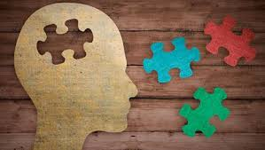

Entendemos que para una buen manejo del tiempo libre tener metodos de entretencion es lo mejor que podemos hacer en este seccion de la pagina queremos proponer juegos que a lo mejor ya no son los mas llamativos pero darles una oportunidad podra hacer que mejores algunos de tus hambitos y tus capacidades en el proceso.
¿No sabes jugar?
No te preocupes te daremos videos para que puedas aprender y probar estos juegos que puede darte una sorpresa con algunos momentos de divercion de manera muy sana y creativa
| El ajedrez es un juego para dos jugadores y trata de la estrateguia por ser un deporte mental el cual se basa en hacer caer el rey rival utilizando nuetras fichas generando el mayor numero de posibilidades.
|
| Es un videojuego para un jugador. El objetivo del juego es despejar un campo de minas sin detonar ninguna mina El juego consiste en despejar todas las casillas de una pantalla que no oculten una mina. Algunas casillas tienen un número, este número indica las minas que suman todas las casillas circundantes. Así, si una casilla tiene el número 3, significa que de las ocho casillas que hay alrededor (si no es en una esquina o borde) hay 3 con minas y 5 sin minas |
|  | Un rompecabezas es un juego de mesa cuyo objetivo es formar un personaje combinando correctamente sus partes, que se pueden encontrar en diferentes piezas o piezas planas. |
| Tetroid es un juego similar al tetrix con la diferencia en que se tiene libertad total para colocar las fichas a su gusto el juego es simple y entretenido solo si se quedan sin espacio para mas fichas perderas |